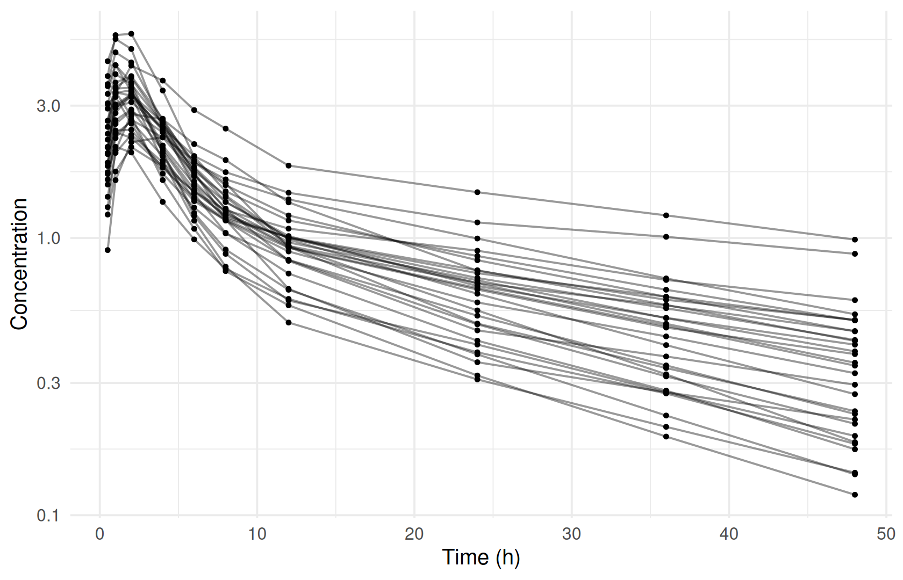
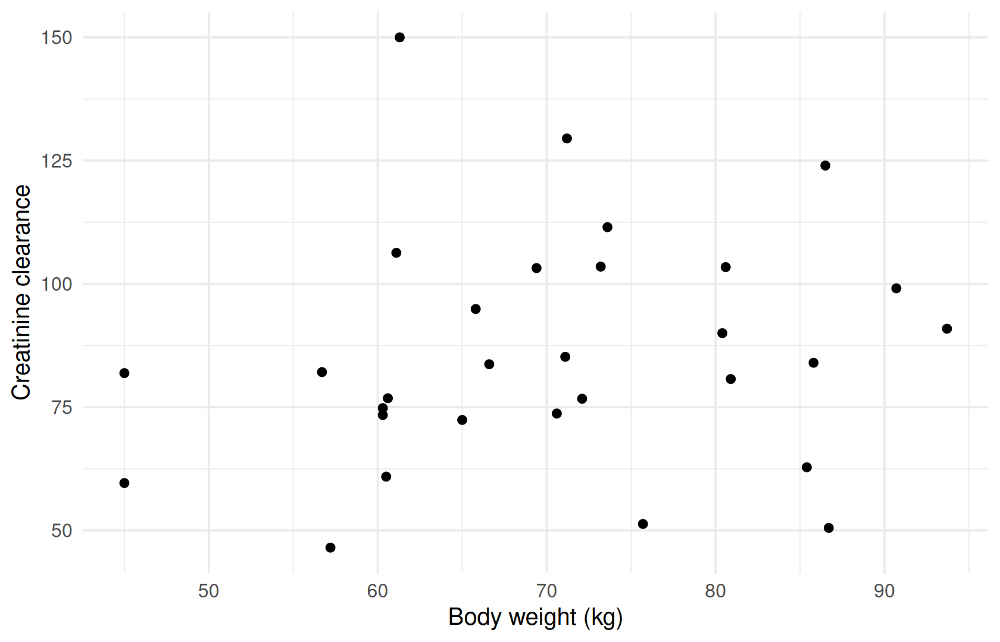

DATA → MODEL → ESTIMATE ⇄ EVALUATE → SIMULATE → REPORT
Preparing and checking the analysis dataset
Where you are
Every analysis starts with a dataset. ferx reads a single CSV file with one row per event: a dose, an observation or another event, per subject and time. Before writing a model it pays to check that the file says what you think it says. Are doses where they should be, are observations and covariates plausible, and are the records you intend to exclude really excluded?
This chapter covers the column layout ferx expects, checking a dataset in R, and the three ways to exclude records without editing the file. It uses the bundled two_cpt_oral_cov dataset, which the rest of The analysis workflow builds on.
The data
ferx_get_columns() reads only the header line and sorts the columns into the standard ones ferx recognises and everything else. Columns it doesn’t recognise are treated as covariates:
ex <- ferx_example("two_cpt_oral_cov")
ferx_get_columns(ex)
#> Data file: /home/runner/work/_temp/Library/ferx/examples/data/two_cpt_oral_cov.csv
#> 10 columns
#>
#> Required NONMEM: [1] ID [2] TIME [3] DV [4] EVID [5] AMT [6] CMT
#> Optional NONMEM: [7] RATE [8] MDV
#> Covariates / other: [9] WT [10] CRCLIt accepts the list returned by ferx_example(), a path, or a fitted model (it then reads fit$data_path). Read the full file with read.csv(). . marks an empty cell:
pk <- read.csv(ex$data, na.strings = ".")
head(pk, 12)
#> ID TIME DV EVID AMT CMT RATE MDV WT CRCL
#> 1 1 0.0 NA 1 250 1 0 1 70.6 73.7
#> 2 1 0.5 3.5262 0 NA 1 0 0 70.6 73.7
#> 3 1 1.0 4.1950 0 NA 1 0 0 70.6 73.7
#> 4 1 2.0 3.3759 0 NA 1 0 0 70.6 73.7
#> 5 1 4.0 2.1090 0 NA 1 0 0 70.6 73.7
#> 6 1 6.0 1.4915 0 NA 1 0 0 70.6 73.7
#> 7 1 8.0 1.1890 0 NA 1 0 0 70.6 73.7
#> 8 1 12.0 1.0018 0 NA 1 0 0 70.6 73.7
#> 9 1 24.0 0.6862 0 NA 1 0 0 70.6 73.7
#> 10 1 36.0 0.4900 0 NA 1 0 0 70.6 73.7
#> 11 1 48.0 0.3546 0 NA 1 0 0 70.6 73.7
#> 12 2 0.0 NA 1 250 1 0 1 80.9 80.7The column layout
The standard columns and their meaning (details: ferx-core data format):
| Column | Meaning |
|---|---|
ID |
Subject identifier |
TIME |
Event time. It need not start at zero |
DV |
Observed value on observation rows |
EVID |
Event type: 0 observation, 1 dose, 2 other event, 3 system reset, 4 reset and dose. If the column is absent, rows with a nonzero AMT are treated as doses |
AMT |
Dose amount |
CMT |
Compartment the dose goes into or the observation belongs to |
RATE |
0 for a bolus, > 0 for an infusion at that rate |
MDV |
1 = the row’s DV is not used in the likelihood |
II |
Interdose interval, used with SS and ADDL
|
SS |
Steady-state flag |
ADDL |
Number of additional doses at interval II
|
CENS |
1 = below the lower limit (DV holds the limit), -1 = above the upper limit, 0 = quantified |
two_cpt_oral_cov uses only the first eight, plus two covariates. Other bundled datasets show the remaining columns in use, and the scenario chapters cover each one:
basic <- c("ID", "TIME", "DV", "EVID", "AMT", "CMT", "RATE", "MDV")
examples <- c("warfarin_ss", "warfarin_addl", "warfarin_bloq", "warfarin_iov")
data.frame(
example = examples,
extra_columns = vapply(examples, function(e) {
paste(setdiff(names(read.csv(ferx_example(e)$data, nrows = 1)), basic), collapse = ", ")
}, character(1)),
row.names = NULL
)
#> example extra_columns
#> 1 warfarin_ss SS, II
#> 2 warfarin_addl II, ADDL
#> 3 warfarin_bloq CENS
#> 4 warfarin_iov OCCSS, II and ADDL are covered in Dosing regimens and exposure metrics, CENS in Censored observations (BLOQ), and the occasion column OCC in Variability: random effects, residual error and IOV.
Two rules about row order and missing values matter when you build a dataset (details on the ferx-core data format page):
- When an observation and a dose share a
TIME, the row order decides: an observation listed before the dose is a pre-dose trough. - An observation row (
EVID = 0) with an emptyDVis skipped rather than scored as zero, and ferx warns about it. SetMDV = 1to mark such rows explicitly.
Checking the dataset
A few lines of dplyr answer the basic structural questions:
pk |>
group_by(ID) |>
summarise(doses = sum(EVID == 1), observations = sum(EVID == 0),
first_time = min(TIME), last_time = max(TIME)) |>
summary()
#> ID doses observations first_time last_time
#> Min. : 1.00 Min. :1 Min. :10 Min. :0 Min. :48
#> 1st Qu.: 8.25 1st Qu.:1 1st Qu.:10 1st Qu.:0 1st Qu.:48
#> Median :15.50 Median :1 Median :10 Median :0 Median :48
#> Mean :15.50 Mean :1 Mean :10 Mean :0 Mean :48
#> 3rd Qu.:22.75 3rd Qu.:1 3rd Qu.:10 3rd Qu.:0 3rd Qu.:48
#> Max. :30.00 Max. :1 Max. :10 Max. :0 Max. :48Every one of the 30 subjects has 1 dose and 10 observations. The observed concentrations range from 0.1185 to 5.4514. Missing DV values occur only on dose rows:
Plot the profiles before any modeling. On a log scale the two-phase decline is already visible:
pk |>
filter(EVID == 0) |>
ggplot(aes(TIME, DV, group = ID)) +
geom_line(alpha = 0.4) +
geom_point(size = 0.8) +
scale_y_log10() +
labs(x = "Time (h)", y = "Concentration")
Covariates
WT and CRCL are covariates. Check whether they are constant within subjects, then summarise them one row per subject:
pk |>
group_by(ID) |>
summarise(n_wt = n_distinct(WT), n_crcl = n_distinct(CRCL)) |>
summarise(max(n_wt), max(n_crcl))
#> # A tibble: 1 × 2
#> `max(n_wt)` `max(n_crcl)`
#> <int> <int>
#> 1 1 1
subjects <- pk |> distinct(ID, WT, CRCL)
summary(subjects[, c("WT", "CRCL")])
#> WT CRCL
#> Min. :45.00 Min. : 46.50
#> 1st Qu.:60.73 1st Qu.: 73.47
#> Median :70.85 Median : 82.90
#> Mean :70.43 Mean : 86.11
#> 3rd Qu.:80.55 3rd Qu.:102.17
#> Max. :93.70 Max. :150.00ggplot(subjects, aes(WT, CRCL)) +
geom_point() +
labs(x = "Body weight (kg)", y = "Creatinine clearance")
The model file for this dataset declares both columns in a [covariates] block. Without such a block, every non-standard column is treated as a covariate automatically. Covariate modeling covers covariate modeling.
Excluding records
WarningMaturity: beta
ferx-core labels data selection beta. See feature maturity.
You often need to leave records out of an analysis: samples below a threshold, a time window, or whole subjects. ferx does this at read time, so the CSV file stays unchanged, and it reports exactly what was excluded. Conditions are comparisons on column names (==, !=, <, <=, >, >=), with && to combine terms within one condition:
-
ignore: a record is excluded when any condition is true. -
accept: a record is kept only when all conditions are true. -
ignore_ids: all records of these subjects are excluded.
Preview the selection in R
ferx_apply_selection() shows what a selection would do before you fit. It returns the retained records as a ferx_data object, and print() on it summarises the exclusions. As an example, exclude observations below 0.2 and, suppose, subjects 3 and 7 after a data review:
sel <- ferx_apply_selection(ex$data, ignore = "DV < 0.2", ignore_ids = c(3, 7))
sel
#> <ferx_data> 300 of 330 records retained (28 obs, 2 doses, 0 other excluded)
#> Fired ignore: DV < 0.2
#> Subjects excluded: 3, 7
#> Pass excluded = TRUE to ferx_apply_selection() to inspect excluded records.
#>
#> ID TIME DV EVID AMT CMT RATE MDV WT CRCL
#> 1 1 0.0 . 1 250 1 0 1 70.6 73.7
#> 2 1 0.5 3.5262 0 . 1 0 0 70.6 73.7
#> 3 1 1.0 4.1950 0 . 1 0 0 70.6 73.7
#> 4 1 2.0 3.3759 0 . 1 0 0 70.6 73.7
#> 5 1 4.0 2.1090 0 . 1 0 0 70.6 73.7
#> 6 1 6.0 1.4915 0 . 1 0 0 70.6 73.7
#> ... 294 more rowsWith excluded = TRUE you get the excluded records instead, each with the first rule that removed it:
dropped <- ferx_apply_selection(sel, excluded = TRUE)
dropped |> count(.exclude_reason)
#> .exclude_reason n
#> 1 ignore: DV < 0.2 8
#> 2 ignore_subjects: 3 11
#> 3 ignore_subjects: 7 11An accept condition states what to keep. This one keeps only the first 24 hours:
ferx_apply_selection(ex$data, accept = "TIME <= 24")
#> <ferx_data> 270 of 330 records retained (60 obs, 0 doses, 0 other excluded)
#> Fired accept: TIME <= 24
#> Pass excluded = TRUE to ferx_apply_selection() to inspect excluded records.
#>
#> ID TIME DV EVID AMT CMT RATE MDV WT CRCL
#> 1 1 0.0 . 1 250 1 0 1 70.6 73.7
#> 2 1 0.5 3.5262 0 . 1 0 0 70.6 73.7
#> 3 1 1.0 4.1950 0 . 1 0 0 70.6 73.7
#> 4 1 2.0 3.3759 0 . 1 0 0 70.6 73.7
#> 5 1 4.0 2.1090 0 . 1 0 0 70.6 73.7
#> 6 1 6.0 1.4915 0 . 1 0 0 70.6 73.7
#> ... 264 more rowsSelect at fit time
The fit applies the same selection in the engine. Pass the conditions to ferx_fit() directly, or pass the previewed ferx_data object as data:
fit_sel <- ferx_fit(ex$model, ex$data, ignore = "DV < 0.2", ignore_ids = c(3, 7), verbose = FALSE)
str(fit_sel$exclusions)
#> List of 7
#> $ n_records_total : int 330
#> $ n_obs_excluded : int 28
#> $ n_dose_excluded : int 2
#> $ n_other_excluded : int 0
#> $ excluded_subject_ids: chr [1:2] "3" "7"
#> $ fired_ignore : chr [1:3] "ignore_subjects: 3" "ignore: DV < 0.2" "ignore_subjects: 7"
#> $ fired_accept : chr(0)fit_sel2 <- ferx_fit(ex$model, sel, verbose = FALSE)
c(conditions = fit_sel$ofv, ferx_data = fit_sel2$ofv)
#> conditions ferx_data
#> -1044.557 -1044.557fit$exclusions records how many observation, dose and other records were dropped, which subjects were dropped entirely, and which rules fired. The same conditions can also go through settings as ignore, accept and ignore_subjects.
Select in the model file
A selection that belongs to the analysis itself can live in the model file, in a [data_selection] block. The bundled warfarin_data_selection model drops observations below 1.0:
ws <- ferx_example("warfarin_data_selection")
ferx_model_get_section(ws$model, "data_selection")
#> # [data_selection]
#> # Drop observations below a surrogate LLOQ of 1.0 mg/L.
#> ignore = DV < 1.0
fit_ws <- ferx_fit(ws$model, ws$data, verbose = FALSE)
fit_ws$exclusions$fired_ignore
#> [1] "ignore: DV < 1.0"
fit_ws$exclusions$n_obs_excluded
#> [1] 2ferx_apply_selection() on a fit replays the rules that fired, so you can inspect the excluded rows afterwards:
ferx_apply_selection(fit_ws, excluded = TRUE)
#> ID TIME DV EVID AMT CMT RATE MDV .exclude_reason
#> 84 7 120 0.9761 0 . 1 0 0 ignore: DV < 1.0
#> 96 8 120 0.8700 0 . 1 0 0 ignore: DV < 1.0Conditions given in the ferx_fit() call are merged with those in [data_selection], not replacing them.
Naming the dataset in the model file
WarningMaturity: beta
ferx-core labels the [data] block beta. See feature maturity.
A [data] block lets a model file name its own dataset, so that model and data travel together. A relative path is resolved from the model file’s directory. None of the bundled models has one, so add one to a copy:
run_dir <- book_tempdir("data-block")
invisible(file.copy(ex$data, file.path(run_dir, "pk.csv"), overwrite = TRUE))
model_with_data <- file.path(run_dir, "two_cpt_oral_cov.ferx")
writeLines(c(readLines(ex$model), "", "[data]", " path = pk.csv"), model_with_data)
fit_db <- ferx_fit(model_with_data, verbose = FALSE)
basename(fit_db$data_path)
#> [1] "pk.csv"ferx_fit() was called without data, so the file named in [data] was used. An explicit data argument takes precedence over the block. [data] can also rename columns whose headers differ from the standard names. See the ferx-core [data] block page.
Options that matter
| Function | Argument | Meaning |
|---|---|---|
ferx_get_columns() |
data |
Path, ferx_example() list or fit |
ferx_apply_selection() |
data |
Path, data frame, ferx_data object or fit |
ignore |
Exclude a record when any condition is true | |
accept |
Keep a record only when all conditions are true | |
ignore_ids |
Subject IDs to exclude entirely | |
excluded |
TRUE returns the excluded records with .exclude_reason
|
|
ferx_fit() |
ignore, accept, ignore_ids
|
The same selection, applied by the engine and merged with [data_selection]
|
settings |
ignore, accept, ignore_subjects
|
Setting-based spelling of the same selection |
In a model file the same selection is written in [data_selection], and the dataset path in [data].
Pitfalls
The R preview is lenient; the fit is strict. ferx_apply_selection() treats a condition on an unknown column as never matching. It excludes nothing and says nothing. The fit applies the same condition but warns. Here CONC is a misspelling of DV:
attr(ferx_apply_selection(ex$data, ignore = "CONC < 0.2"), "exclusions")$n_obs_excluded
#> [1] 0
fit_typo <- ferx_fit(ex$model, ex$data, ignore = "CONC < 0.2", verbose = FALSE)
typo_warning <- ferx_get_warnings(fit_typo, as_df = TRUE)
typo_warning <- typo_warning[grepl("FILTER", typo_warning$message), ]
typo_warning$severity
#> [1] "warning"
strwrap(typo_warning$message, width = 80)
#> [1] "W_FILTER_COLUMN_ABSENT: data-selection filter references column(s) not found in"
#> [2] "the data: conc. These conditions never match, so no rows are excluded for them"
#> [3] "— check for a typo in the column name. Available columns: ID, TIME, DV, EVID,"
#> [4] "AMT, CMT, RATE, MDV, WT, CRCL."Always check fit$exclusions (or the warnings) after fitting with a selection.
Other points:
- Empty cells never match a comparison.
DV < 0.2does not exclude dose rows, whoseDVis empty. -
||is not supported within a condition. Use several conditions instead, since any matchingignorecondition excludes the record. - Conditions on
ADDLor on the occasion column have no effect.
Warnings you may see here
-
data_quality(warning): the dataset has a problem, such as a missingDV, inconsistentADDL/IIrecords or a non-positiveDV. Fix the data before trusting the fit. See dataset and model structure warnings.
Summary
- Check the header with
ferx_get_columns(), then check structure, missing values, profiles and covariates with ordinary R before modeling. - Preview exclusions with
ferx_apply_selection(). Apply them withferx_fit(ignore, accept, ignore_ids)or in[data_selection], and confirm them infit$exclusions. -
[data]lets a model name its dataset. An explicitdataargument wins.
Next: Writing and managing model files writes the model for this dataset.
TipReference
- R help:
?ferx_get_columns,?ferx_apply_selection,?print.ferx_data,?ferx_fit - ferx-core: data format,
[data],[data_selection], warnings